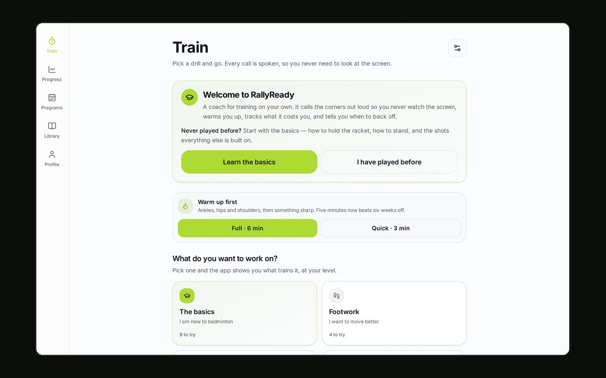
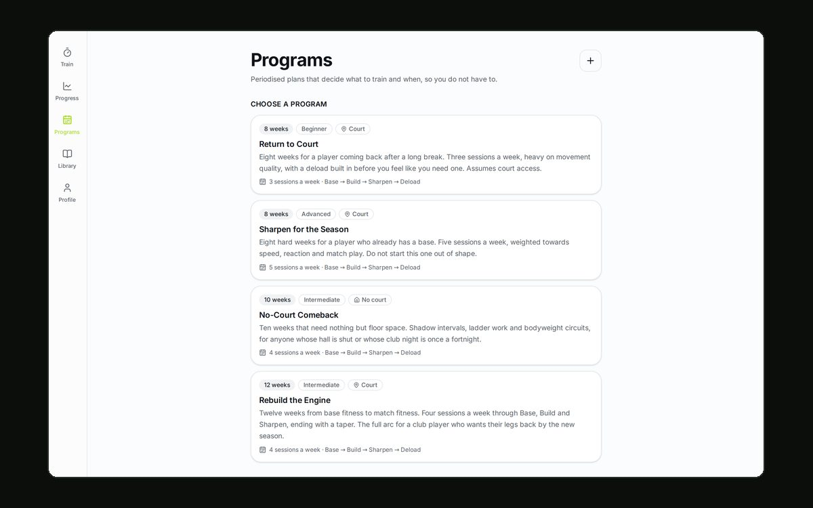

rallyready/
Self-directed badminton training for a player with no coach and no partner. The app is the random caller: every corner is spoken aloud, so you can finish a whole session without once looking at the screen.

$cat problem.md
Badminton footwork is trained by someone shouting a corner at you. Alone, you have nobody to shout, no partner to feed, and often no court. What is left is a dozen YouTube tabs and no record of whether any of it is working.
$cat solution.md
- Audio-first. Every call is spoken, carries a distinct tone and buzzes the phone. You cannot watch a screen and move to a corner at the same time, so the screen is optional.
- Split-step training. An optional metronome tick fires a configurable 0.2–0.7s before each call, so you learn to land the split-step as the call arrives — the single most common club-player fault.
- Real deception. A fake call, then the real one, forcing a second split-step. The fake sounds identical; a fake you can hear coming trains nothing.
- Training load, not minutes. One tap rates effort 1–10; effort × minutes is the number that compares a brutal ten minutes with an easy half hour — and the app watches the ramp, because training alone means nobody else is watching for the overuse injury.
- It adjusts to you. Three taps — sleep, legs, energy — and the session bends lighter or heavier. A written plan cannot tell you slept four hours.
- Periodised programs. 4–16 week plans generated from four choices: Base → Build → Sharpen, a deload every fourth week, a taper at the end. Today's session is the first card on the home screen.

$cat engineering.md
341 tests run under Vitest, and npm run verify —
typecheck, lint, tests, build — is what CI runs on every push. The drill engine,
the load model, the program generator and the benchmark scoring are pure
functions with tests, precisely so the parts that decide how hard someone trains
are not guesswork.
It installs as a PWA: the timer, the drills and the coaching notes work with no connection at all, and sessions still log, syncing to Supabase when the network comes back. Auth, progress and published programs live in Postgres behind Supabase's row-level security.
$cat why-it-matters.md
It is the most complete thing I have built: five phases, a real domain model, an offline story, an audio pipeline, and enough tests that I can change the program generator on a Tuesday without fear.